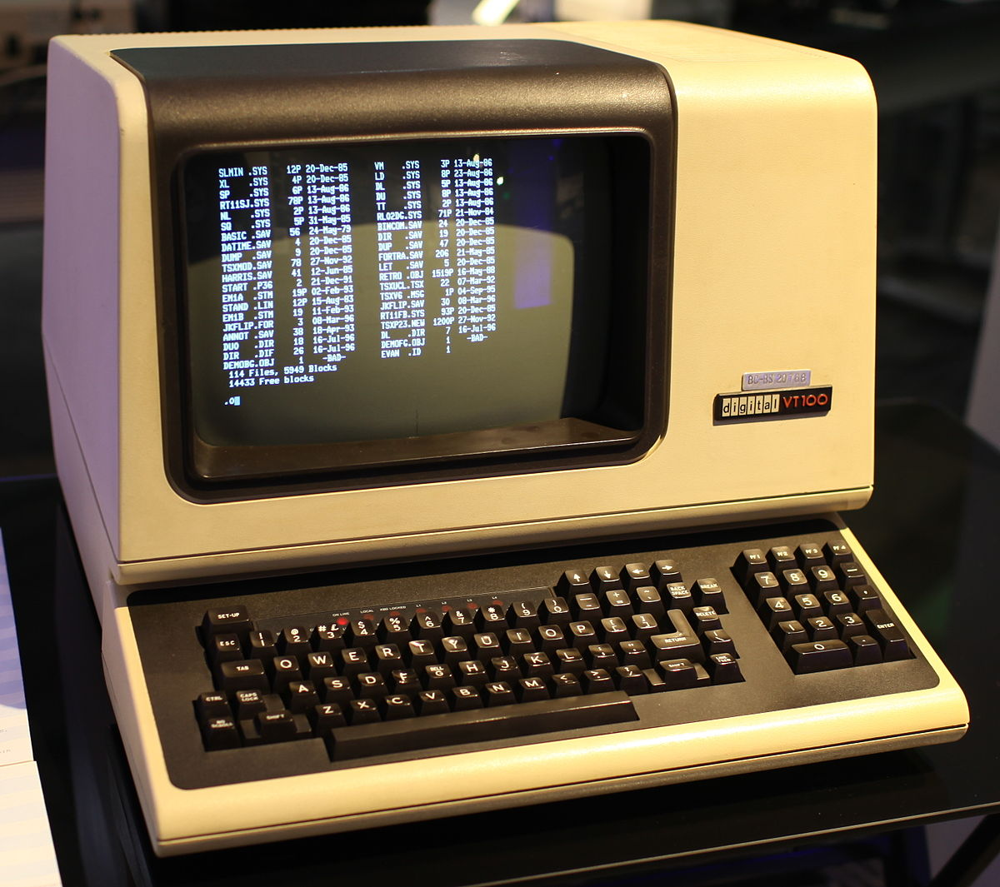
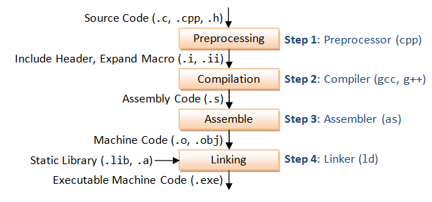
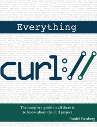
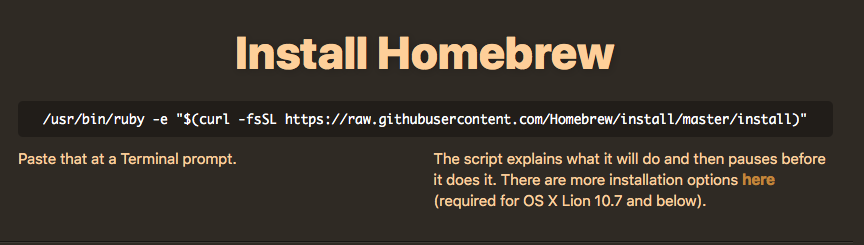
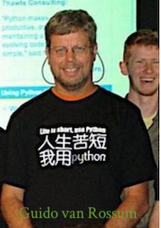

public: True class: center, middle # Hello, Linux World 蒋炎岩 <jyy@nju.edu.cn> 南京大学计算机软件研究所 ---- **<center><font color="red">作业1已布置，请按时提交</font></center>** --- # 复习 上一次课(Hello, C World)介绍了C语言的正确打开方式： * 编程的正确方式：不言自明、不言自证 * 测试的正确方式：做好框架，猛烈摩擦 * STFW, RTFM, RTFSC ---- 这一次课：Linux和C更配哦 * 教你如何正确打开Linux，和命令行做个朋友 * STFW, RTFM, RTFSC ---- **<center><font color="red">核心原则：机器永远是对的</font></center>** --- # 欢迎来到Linux世界 (PA世界) 在UNIX (Linux的祖宗)诞生的时候，没有Windows，没有GUI (也没有鼠标)，只有终端、磁带…… <center></center> 问题：那时候的(原始)人怎么使用计算机呢？ --- # 欢迎来到Linux世界 在命令行里，可以做今天你能做的任何事。 * 编代码 (终端里就可以编辑啦，vim/emacs) * 写论文，生成PDF文件 (还可以对PDF文件进行编辑) * 发邮件 (不仅可以发邮件，还可以轻而易举地爬网页、……) 这一切都不需要GUI，一点都不需要，就一个黑底白字的控制台(Command-Line Interface, CLI)就行了 -- count: false ---- 还记得上次C语言的`main`函数么： ```c int main(int argc, char *argv[]); ``` CLI工具纯粹依靠参数(argv)、标准输入(stdin)、标准输出(stdout)和标准错误输出(stderr)搞定一切事情。 --- # 例子 解放你的鼠标： * `ping baidu.com` - 看看基本网络状态 * `df /` - 查看磁盘使用情况 * `find . -name "*.cpp"` - 查找当前目录下的cpp文件 * `fdisk /dev/sdb` - 对磁盘进行分区 * `shutdown -h 0` - 在0时间后关闭计算机 * `sudo apt install libreoffice` - 切换到根用户执行命令 * `pdflatex assignment.tex` - 编译待提交的作业 * `iconv -f gbk -t utf-8 file.txt` - 文件编码转换 --- # 进入新世界 ---- 进入Linux世界的第一课：Read The F**king Manual，也就是学到最重要的第一个命令 <center><span style="color:red;font-size:200%">man</span></center> 就是那个RTFM的M。Linux世界里的命令都是这样简写的： * cd, ls, echo, wc, tr, mount, sed, fsck, grep, awk, ... ---- `man`在习惯之后，日常生活中非常好用 * `man man`学习如何RTFM：`man 2`查看系统调用；`man 3`可以查看标准库，`man -k`可以完成检索 * `man`也有很多高级一些的替代品，比如`info`，W (STFW) --- # 接受一个新世界 > Unix *is* user friendly. It's just selective about who its friends are. ---- Linux有一套全新的概念体系： * *Everything* is a file: 文本、图片、I/O设备、系统配置、…… * *Pipelining* programs: 基本做事方式是把命令互相连接(Shell/脚本) ❓为什么新手那么难受？因为黑乎乎的命令行才不考虑什么“用户体验”，你什么都得自己学。 ---- 也意味着：你对概念体系掌握越熟练，越能享受命令行高效的好处(经常难以容忍点鼠标的麻烦，明明两个命令就搞定了，凭什么要我点20下鼠标？？？)。 --- # 命令行工具：例子 把文件的内容打印出来 (cat) * 这个我也会啊，拿C/C++/Java语言写就完事了 统计文件的行数 (wc) * 这个简单，跟打印文件没啥区别，就数`\n`的数量 在文件里查找出包含某个模板字符串的行 (grep) * 这也好办，就是字符串匹配嘛 ---- 这些工具看起来都很简单：我自己也能实现一个 --- # 新世界：命令行工具的组合 配合上*everything is a file*，把一个程序的输出接到另一个程序的输入，就能干很多好玩的事情了！ * 统计所有cpp文件的行数：`find . | grep '\.cpp$' | xargs cat | wc -l` * 统计命令行命令的频率：`history | tr -s ' ' | cut -d ' ' -f3 | sort | uniq -c | sort -nr` -- count: false ---- 以上都是命令行里的**命令**，但同时也是bash script的程序 * 无时不刻开开心心编程 --- # 💡 Linux世界：小窍门 遇到错误，你是不是第一反应就是去胡乱尝试一通？对了就对了，不对就抓瞎？ 是不是有时候不知道该到底怎么STFW, RTFM？ * 从读脚本开始：不要觉得Makefile、提交脚本都是和你**无关**的 * 试图理解一切事情是如何发生的 * 从读得懂开始，逐渐过渡到会写 ---- 很快你也会成为高手的 --- class: center, middle # 实例分析：程序员的日常 我们每天是怎么和命令行相处的？ --- # 不夸张地说：任何事 随便举一些日常生活里让你浪费很多时间重复的例子： * (学霸福利) 刷教务系统看看分数有没有出来 * 对一个目录里的所有.cpp文件执行同样的vim动作 * (latax用户福利) 把LibreOffice的演示文稿导出为PDF，然后将每一页的白边部分裁去，分别命名为`fig-1.pdf`, `fig-2.pdf`, ... * 把一大堆扫描的jpg图片分别打上页码，按顺序拼接成pdf --- # ACM-ICPC南京赛区查重记 本年度友情参与了ACM-ICPC南京赛区代码查重(ICPC💊) * 使用我们自己的代码查重工具[Needle](https://zhuanlan.zhihu.com/p/40568346) * ACM-ICPC南京赛区网络预赛：总共取消了40个学校的参赛资格，包含985, 211, 两所承办校 -- count: false ---- 对于一次网络预赛，日常统计： * 有多少份AC的提交？ * 每个题有多少个不同的AC提交？ * AC代码一共有多少行？ * 重复情况如何？ --- class: center, middle # 实例分析：组织小型项目 面向OJ编程的时候都只写一个文件。怎么管理更大的项目呢？ --- # 开始一个小型项目 我们打算做一个计算机系统模拟器，第一步就是打算把项目代码拆分到若干个文件中： * `yemu.h`：提供公共数据结构、函数等的声明 * `yemu.c`：模拟器的主循环 * `exec.c`：解释执行指令的代码 * `test.c`：测试框架 ---- 但是光有这些文件，怎么变成可执行文件呢？ > 在面向OJ编程的时候，大家是怎么办的？ --- # 生成可执行文件 (1) ```bash gcc -Wall -Werror -std=c11 -O2 -o yemu yemu.c exec.c ``` 原来把多个文件一起编译就这么简单。一些额外问题： * `#include <yemu.h>`和`#include "yemu.h"`有什么区别？ * 在`yemu.h`里，为什么定义`u8 R[NREG]`就会出错，但`#define NREG 4`就不会出错？ * 编译多个文件，和把所有文件都粘贴到一块编译是否有区别？ --- # 生成可执行文件 (2) 实际上，每个文件都经历了单独的预处理 (宏展开)、编译 (生成汇编)、汇编 (生成二进制代码)；最后链接得到可执行文件 <center></center> 最后就得到了yemu的可执行文件。 --- # 新问题：一键编译 如果项目里有10,000个文件，上百万行代码，每次都重新编译耗时太多——没改过的文件就不用编译了嘛 * 如果一个`yemu.c`文件改了，相应的要重编译 * 如果一个`yemu.c`依赖的`yemu.h`改了，也要重新编译 ---- IDE已经帮我们实现了这个功能：我们只要把文件加进IDE里，它就会自动帮我们管理哪些改了、哪些没改 * 但Linux有更灵活、更好定制的方式 --- # 使用Make工具 管理项目的本质：(1) 理解**对象**之间的**依赖关系**；(2) 如果被依赖路径上的**对象**被修改，就需要**更新** ---- Make工具(编程语言)： * 提供说明依赖关系的语言 * 允许在更新时执行任何脚本 基本语法： ```Makefile object: 依赖1 依赖2 ... # object一般是文件名 生成object的命令 # 行首必须是<tab>，空格不行! ``` 当然作为编程语言，也支持变量、替换、调用shell…… --- # 使用Make管理YEMU 目标：实现一键编译、一键运行、一键测试 ```makefile . ├── Makefile ├── exec.c ├── test.c ├── yemu.c └── yemu.h ``` ---- 支持的功能： * `make`编译得到`yemu` * `make run`编译并运行`yemu` * `make test`编译并运行测试 * `make clean`清除编译结果 --- # 更多高级用法 不要忘了，make是个编程语言，以下都能轻松实现： * 根据配置选项调整编译内容 * 扫描目录，提取其中的所有`.c`文件，分别编译并链接 * 与gcc配合，自动解析每个`.c`文件依赖的所有其他文件 (例如`yemu.h`) ---- 有兴趣的同学可以阅读ICS课上下发的代码，或者现有项目 (例如busybox) 的Makefile。 --- class: center, middle # 实例分析：作业提交 PA的提交系统就是一个典型的命令行使用案例。 --- # 神奇的作业提交方式 我只要进到PA的目录里，一条命令就提交作业了？？？再也不用去那个令人智熄的cslabcms了。 > 平台具有三大特点：规范及量化教学过程、编程作业实时查重和学习行为统计与分析。 > > 查重及实时查重功能支持包括C, C++, Java, Javascript,VB, Perl,Pascal, Matlab, 8086 Assembly, MIPS Assembly, Fortran等多种编程语言，适用性较广。 到2016年，这个系统作业都只能提交一次😂交错了就要联系助教删除…… --- # 作业提交：命令解析 (1) <center><code>bash -c "$(curl -s http://.../submit.sh)"</code></center> * bash是Linux中默认的Shell，PA里的“命令行”就是这个 * bash同时也是系统里的一个应用程序(和Hello World一样)，能在命令行里调用 * `-c`选项会让bash把下一个参数当做脚本执行 * `$(...)`表示把括号里的命令执行，把输入粘贴进来。`"$(...)"`把所有输出当成一个字符串 * `curl` (*command line tool and library* for transferring data with URLs) 就厉害了，它也是一个程序，我们用它下载一个url (输出到标准输出) --- # 作业提交：命令解析 (2) ```bash bash -c "$(curl -s http://.../submit.sh)" ``` 实际完成的功能：在网络上下载一个脚本，然后丢到bash的-c参数里执行。看来这个执行的脚本就是PA提交的关键了。直接在浏览器里[打开链接](http://moon.nju.edu.cn/people/yyjiang/teach/submit.sh)，就能查看源代码了。 ---- 还有一些其他类似的写法： ```bash curl -s http://.../submit.sh | bash - ``` --- # 作业提交：命令解析 (3) 脚本就是一个bash程序，这些命令也可以直接复制粘贴到命令行里。 ```bash set -e [ -z ${STUID} ] && echo "STUID must be set (RTFM)" && exit [ -z ${STUNAME} ] && echo "STUNAME must be set (RTFM)" && exit echo -n "The task to be submitted > " read task ``` * `set -e`的作用是，只要有任何命令失败就退出 * 第二行的判断`[ -z`判断字符串是否为空，如果字符串不空，后面就不会执行了，否则会打印错误消息退出 * `echo`打印一些提示信息，(`-n`请RTFM) * `read`从键盘输入你要提交的作业，比如PA0，存入变量`task`。 代码功能：确认`${STUID}, ${STUNAME}, $task`变量的值。 --- # 作业提交：命令解析 (4) ```bash cwd=${PWD##*/} ``` 整个脚本里最难理解的：`${PWD##*/}`，只好RTFM啦 > PWD: 一个变量，总是代表当前目录的绝对路径。 > > ${string##substring}: 删除变量string中最长匹配substring的部分。 执行完之后，`cwd`就是当前目录名。比如你现在在`/home/xyz/ics-pa`目录里，相当于执行`cwd=ics-a`。 --- # 作业提交：命令解析 (5) ```bash wiki=$(curl -m 1 -Ls -w '%{url_effective}' -o /dev/null 'moon.nju.edu.cn/~jyywiki' | grep -o 'http://[^/]*/') ``` 再次见到了`$()`，代表把一个程序的输出粘贴到脚本里。 * `curl`依然是从网络上获取，不过参数更多了。比较重要的是： * URL moon.nju.edu.cn/~jyywiki会重定向到校内IP * 输出`%{url_effective}`，并且把输出重定向到`/dev/null` (丢弃)，等于获取重定向的URL * 得到http://114.212.81.193:5000/wiki/Main_Page * `|`是管道，代表把`curl`的输出作为`grep`的输出，把IP地址爬出来。 * 得到http://114.212.81.193:5000/ 。无论校内IP变成什么，只要永久URL更新，就能提交到正确的位置提交。 --- # 作业提交：命令解析 (6) ```bash tarball=$(mktemp -q).tar.bz2 bash -c "cd .. && tar cj ${cwd} > ${tarball}" curl -F "task=${task}" -F "id=${STUID}" -F "name=${STUNAME}" \ -F "submission=@${tarball}" ${wiki}upload ``` 你能试着“读出”这个这些命令是做什么的吗？ * `mktemp`用于生成一个临时文件，`-q`：出错时悄悄返回 * `tar`用于压缩，`c`：创建压缩包；`j`：使用bzip2压缩 * 最后一个`curl`命令将参数和文件一并提交 --- # 安装脚本：应用 很多现代开源软件都用这种方式实现“一键安装” - Homebrew <center></center> - oh-my-zsh (推荐大家使用，安装脚本也可以看得懂了) ```bash sh -c "$(curl -fsSL https://.../install.sh)" ``` --- # 小结 脚本大法真是好：要点那么多鼠标的事情也可以自动化！ * 各种牛逼的万能工具curl, mktemp, ...组合$(), |, ... <center><img src="../static/wiki/ics/2018/slides/img/geek.png" width="550px"/> --- # 作业提交：命令解析 (7) 但是脚本也难学啊 * 各种奇葩的语法，动不动就要RTFM，还很容易写错，存在潜在漏洞 (比如文件名里的空格……) ---- 所以服务器的后台其实是Python (总共才~70行代码) * 各种提交合法性检查(比如学号/姓名对应) * 解析压缩包 * 寻找是否有根目录下的.git (否则warning) * 寻找是否有根目录下的学号.pdf (否则warning) --- class: center, middle # 克服惰性、拖延和恐惧 看到命令行我就难受…… --- # 原因分析 ⚠️：人天生就对**未知**的东西的产生**恐惧**和**逃避** > * 不想学bash，对命令感到恐惧； > * 不想用vim/emacs，在gedit的默认参数下活得很好、看项目代码也用鼠标点点； > * 不想用tmux，要开多个ssh； > * 不愿意看手册，只想守着那一点学过的语言特性一直到老； > * 不懂的命令不愿意man一下； > * …… --- class: center, middle # 从今天开始，不要再懒啦 (1) Don't give up easy. (2) Get out of your comfort zone. --- # “用对的工具做对的事” 习题：阅读更大的代码 * 拿到一个比较大的项目(例如busybox)，解压缩能不能不用鼠标(到时候如果有一堆压缩包，你就点不过来了)？ * 几百个源文件，连`main`在哪里都找不到，怎么办？ * 代码里有很多宏定义、函数声明，怎么快速找到？ * 如果看到了不会用的库函数，怎么快速看下它是做什么的？ * 如果想在ipad上阅读这些代码，有什么办法？ **<center><font color="red">记住：总有工具让一切变得简单</font></center>** ---- STFW！一旦适应这个节奏，你就会给人一种“黑客”的感觉了！ --- class: center, middle # 从今天开始编程 在写问求作业的时候，你在编程 (latex) 在写PA的时候，你在编程 (C) 在控制台输入命令的时候，你在编程 (bash, sed, make, regex, ...) 打开Vim编辑文本的时候，你也在编程 (ex)